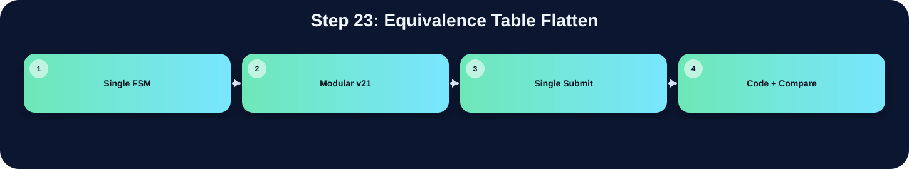

將 equivalence table 壓平成 root label。

此表把本流程在三個版本中的 state/module 與 code 關係整理出來；沒有明確對應者保持空白。
| 版本 | 對應 state / module | 和 code 的關係 |
|---|---|---|
| Single FSM | ||
| Modular v21 | ccl_v21_fast | 用 eq_table 合併等價 label |
| Single Submit | ccl FLATTEN_TABLE | 將 eq_table 轉成連續 root label |
在「Equivalence Table Flatten」流程中，並非三個版本都有獨立而明確的程式段落。Single FSM 版沒有獨立顯示此流程，可能被合併在其他 state 中，或不需要此階段。Modular v21 版有明確對應，主要在 ccl_v21_fast 完成，說明為：用 eq_table 合併等價 label。Single Submit 版有明確對應，主要在 ccl FLATTEN_TABLE 完成，說明為：將 eq_table 轉成連續 root label。這種差異通常來自架構選擇：單一 FSM 會把多個小步驟合併在同一段 state；模組化版本則傾向把功能交給特定子模組；single_submit 則在單檔中保留 module-level 階段。
下方採用下拉式區塊顯示。中文說明放在程式碼上方；原始程式碼本身沒有修改、沒有插入註解。若某份檔案沒有明確對應流程，該程式碼區塊保持空白。
// Function
// Count the thresholded pixels and determine whether the foreground is the
// high-gray side or the low-gray side. This prevents the binary mask from
// being inverted when the object/background intensity relation changes.
// ============================================================================
(* keep_hierarchy = "yes" *)
module polarity_v21_fast(
input clk,rst, // 系統時脈輸入
input valid, // top/module 介面訊號宣告
input [7:0] threshold, // Otsu 計算後的 8-bit threshold
// ImgROM
input [31:0] Img_Q, // ImgROM 讀回的 32-bit RGB pixel
output reg Img_CEN, // ImgROM 低有效 chip enable
output reg [15:0] Img_A, // ImgROM 讀取位址
output Img_WEN, // top/module 介面訊號宣告
output reg done, // 輸出完成旗標
output reg polarity // Polarity decision output
);
assign Img_WEN = 1'b1;
reg [7:0] counter; // 循序計數器暫存器宣告
reg [1:0] cs,ns; // 循序邏輯暫存器宣告
reg proc_done; // 循序邏輯暫存器宣告
localparam IDLE = 2'b00; // FSM 狀態或常數參數宣告
localparam PROCESS = 2'b01; // FSM 狀態或常數參數宣告
localparam DONE = 2'b10; // FSM 狀態或常數參數宣告
always@(posedge clk or posedge rst)begin
if(rst)begin
cs <= IDLE;
end else begin
cs <= ns;
end
end
always@(*)begin
case(cs)
IDLE:begin
if(valid) ns = PROCESS;
else ns = IDLE;
end
PROCESS:begin
if(proc_done) ns = DONE;
else ns = PROCESS;
end
DONE:begin
ns = DONE;
end
default: ns = IDLE;
endcase
end
reg process_start,process_start_d; // 循序邏輯暫存器宣告
always@(posedge clk or posedge rst)begin
if(rst)begin
process_start_d <= 1'b0;
end else begin
process_start_d <= process_start;
end
end
always@(posedge clk or posedge rst)begin
if(rst)begin
counter <= 8'd0;
Img_CEN <= 1'b0;
Img_A <= 16'd0;
process_start <= 1'b0;
polarity <= 1'b0;
proc_done <= 1'b0;
end else begin
case(cs)
IDLE:begin
counter <= 8'd0;
Img_CEN <= 1'b1;
Img_A <= 16'd0;
process_start <= 1'b0;
polarity <= 1'b0;
proc_done <= 1'b0;
done <= 1'b0;
end
PROCESS:begin
process_start <= 1'b1;
if(process_start_d)begin
if((Img_Q >= threshold) && (counter < 8'd255)) counter <= counter + 8'd1;
end
if(!Img_A[8])begin
Img_CEN <= 1'b0;
Img_A <= Img_A + 16'd1;
end else begin
proc_done <= 1'b1;
end
end
DONE:begin
if(counter >= 8'd128) polarity <= 1'b0;
else polarity <= 1'b1;
done <= 1'b1;
end
endcase
end
end
endmodule
// ============================================================================
// Stage module: ccl_v21_fast
// Function
// Read the binary foreground decision from UrSRAM, assign provisional labels,
// record label equivalences, flatten the equivalence table, and write the
// resolved labels to AnsSRAM.
// ============================================================================
(* keep_hierarchy = "yes" *)
module ccl_v21_fast(
input clk, // 系統時脈輸入
input rst, // 同步或非同步重置信號
input [7:0] threshold, // Otsu 計算後的 8-bit threshold
input labeler_en, // One-cycle start pulse for CCL stage
input polarity, // top/module 介面訊號宣告
// ImgRom (Read)
output reg img_cen, // Active-low ImgROM/UrSRAM read enable
output reg [15:0] img_addr, // top/module 介面訊號宣告
output img_wen, // top/module 介面訊號宣告
input [31:0] img_Q, // top/module 介面訊號宣告
// AnsSRAM (Read & Write)
output reg ans_cen, // Active-low AnsSRAM chip enable
output reg ans_wen, // AnsSRAM write enable, active low
output reg [15:0] ans_addr, // top/module 介面訊號宣告
output reg [31:0] ans_D, // top/module 介面訊號宣告
input [31:0] ans_Q, // top/module 介面訊號宣告
output reg labeler_done, // top/module 介面訊號宣告
output [9:0] total_label // top/module 介面訊號宣告
);
reg [9:0] consecutive_label; // 循序邏輯暫存器宣告
assign total_label = consecutive_label - 10'd1;
assign img_wen = 1'b1;
// 0: amount less than thres is foreground
// 1: amount more than thres is foreground
reg pol; // 循序邏輯暫存器宣告
// polarity
always@(posedge clk or posedge rst)begin
if(rst)begin
pol<= 1'b0;
end else if(labeler_en)begin
pol <= polarity;
end
end
wire [31:0] bin_img_Q_light,bin_img_Q_dark,bin_img_Q; // 資料寫入或中間資料匯流排信號
assign bin_img_Q_light = (img_Q[7:0] <= threshold)? 32'd1: 32'd0;
assign bin_img_Q_dark = (img_Q[7:0] > threshold)? 32'd1: 32'd0;
assign bin_img_Q = (pol)? bin_img_Q_dark:bin_img_Q_light;
reg [2:0] state, next_state; // 目前 top FSM 狀態
localparam IDLE = 3'b000; // FSM 狀態或常數參數宣告
localparam READ_PASS_1 = 3'b001; // FSM 狀態或常數參數宣告
localparam WRITE_PASS_1 = 3'b010; // FSM 狀態或常數參數宣告
localparam FLATTEN_TABLE = 3'b011; // FSM 狀態或常數參數宣告
localparam READ_PASS_2 = 3'b100; // FSM 狀態或常數參數宣告
localparam WRITE_PASS_2 = 3'b101; // FSM 狀態或常數參數宣告
localparam DONE = 3'b110; // FSM 狀態或常數參數宣告
always@(posedge clk or posedge rst)begin
if(rst)begin
state <= IDLE;
end else begin
state <= next_state;
end
end
reg buffer_done; // 循序邏輯暫存器宣告
reg READ_PASS_1_done; // 循序邏輯暫存器宣告
reg flatten_done; // 循序邏輯暫存器宣告
wire WRITE_PASS_1_read, WRITE_PASS_1_finish; // 組合邏輯連接信號宣告
reg write_pass_2_finish; // 循序邏輯暫存器宣告
reg write_pass_2_done; // 循序邏輯暫存器宣告
reg read_pass_2_done,read_pass_2_done_d; // 循序邏輯暫存器宣告
always@(*)begin
case(state)
IDLE:begin
if(labeler_en) next_state = READ_PASS_1;
else next_state = IDLE;
end
READ_PASS_1:begin
if(READ_PASS_1_done) next_state = WRITE_PASS_1;
else next_state = READ_PASS_1;
end
WRITE_PASS_1:begin
if(WRITE_PASS_1_finish) next_state = FLATTEN_TABLE;
else if(WRITE_PASS_1_read) next_state = READ_PASS_1;
else next_state = WRITE_PASS_1;
end
FLATTEN_TABLE:begin
if(flatten_done) next_state = READ_PASS_2;
else next_state = FLATTEN_TABLE;
end
READ_PASS_2:begin
next_state = WRITE_PASS_2;
end
WRITE_PASS_2:begin
if(write_pass_2_finish) next_state = DONE;
else if(write_pass_2_done) next_state = READ_PASS_2;
else next_state = WRITE_PASS_2;
end
DONE:begin
next_state = DONE;
end
default: next_state = IDLE;
endcase
end
reg write_done,write_finish; // 循序邏輯暫存器宣告
reg img_cen_d; // 循序邏輯暫存器宣告
reg img_cen_dd; // 循序邏輯暫存器宣告
reg write_done_d; // 循序邏輯暫存器宣告 FLATTEN_TABLE:begin
if(flatten_done) next_state = READ_PASS_2;
else next_state = FLATTEN_TABLE;
end